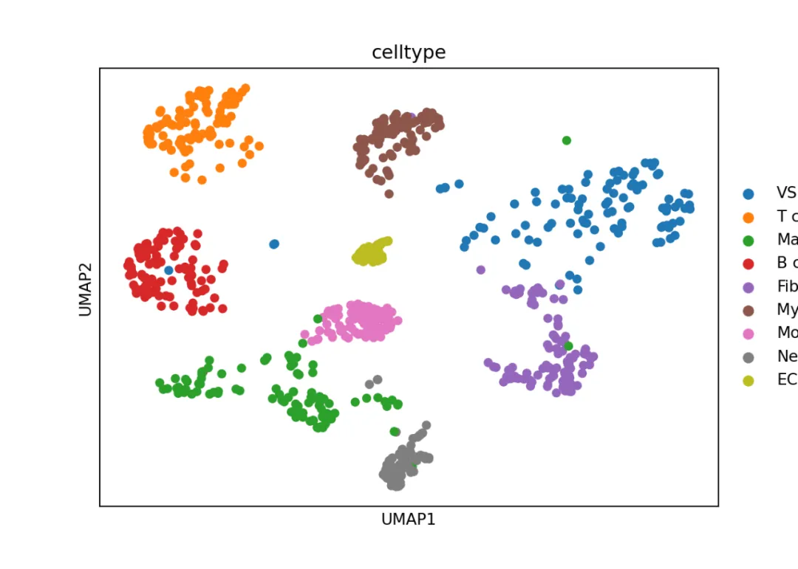
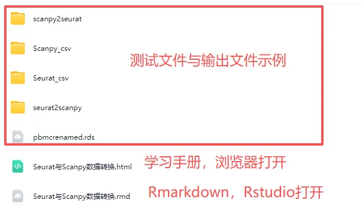

Seurat与Scanpy的数据转换
原文：https://mp.weixin.qq.com/s?__biz=MzAwMzIzOTk5OQ==&mid=2247533070&idx=1&sn=eb762b5b475695f418438d6628d8012f&chksm=9b3c3b5eac4bb2480b47ce8aa71d64b5c9cdcf4a0a3f72e40085b33dc12e33ec8d4c523460f8#rd 合集：单细胞教程全收录
一、写在前面
现在R语言和Python当中都有很多难以舍弃的工具，各自都在单细胞分析中占据重要生态位。R中Seurat自建的SeuratObject，Python中的Scanpy使用的anndata可以说是各自生态中最流行的分析工具，鉴于询问AI的时候AI幻觉总是会捏造一些。
Seurat::WriteH5AD()这种不存在的函数；以及 SeuratDisk::SaveH5Seurat()+Convert的方法也总有下图报错；本教程我们给大家推荐神包sceasy与最基础的csv文件转化方法。想深耕Python单细胞数据分析可参考：
82h视频教程《Python版scRNA-seq分析全流程》
想用R语言搞定scRNA-seq看这里如果需要单细胞数据分析教学 、生信热点全文复现 、自测数据个性化分析 辅导、常态化实验学习，欢迎联系客服微信[Biomamba_zhushou]
二、神包sceasy
神包sceasy是专为解决单细胞转录组数据格式互不兼容问题而设计的 R语言软件包。sceasy是一个“格式转换桥梁”，让你能在不同单细胞分析生态系统（如R的Seurat与Python的Scanpy）之间无缝迁移数据。它能完成loom、rds、h5ad等格式文件存储，以及sce、seurat、anndata多种数据格式的转换。1、转化
if(!require(sceasy))devtools::install_github("cellgeni/sceasy")
## Loading required package: sceasy
## Loading required package: reticulateif
if(!reticulate::py_module_available('anndata'))reticulate::py_install('anndata')
if(!reticulate::py_module_available('scanpy'))reticulate::py_install('scanpy')
dir.create('seurat2scanpy')
## Warning in dir.create("seurat2scanpy"): 'seurat2scanpy' already exists
sceasy::convertFormat(scRNA, from="seurat", to="anndata",
outFile='seurat2scanpy/scRNA.h5ad')
## AnnData object with n_obs × n_vars = 900 × 20254
## obs: 'orig.ident', 'nCount_RNA', 'nFeature_RNA', 'percent.mt', 'group', 'integrated_snn_res.0.025', 'seurat_clusters', 'celltype.group', 'celltype'
## var: 'name'
## obsm: 'X_pca', 'X_umap', 'X_tsne'
dir.create('scanpy2seurat')
## Warning in dir.create("scanpy2seurat"): 'scanpy2seurat' already exists
sceasy::convertFormat('seurat2scanpy/scRNA.h5ad', from="anndata", to="seurat",outFile='scanpy2seurat/scRNA.rds')
## X -> counts
## An object of class Seurat
## 20254 features across 900 samples within 1 assay
## Active assay: RNA (20254 features, 0 variable features)
## 2 layers present: counts, data
## 3 dimensional reductions calculated: pca, tsne, umap
library(reticulate)
py_config() # 查看当前Python配置
## python: /home/biomamba/.cache/R/reticulate/uv/cache/archive-v0/fZoIDLqcx0wu6AucMEyux/bin/python
## libpython: /home/biomamba/.cache/R/reticulate/uv/python/cpython-3.11.13-linux-x86_64-gnu/lib/libpython3.11.so
## pythonhome: /home/biomamba/.cache/R/reticulate/uv/cache/archive-v0/fZoIDLqcx0wu6AucMEyux:/home/biomamba/.cache/R/reticulate/uv/cache/archive-v0/fZoIDLqcx0wu6AucMEyux
## virtualenv: /home/biomamba/.cache/R/reticulate/uv/cache/archive-v0/fZoIDLqcx0wu6AucMEyux/bin/activate_this.py
## version: 3.11.13 (main, Jul 11 2025, 22:43:55) [Clang 20.1.4 ]
## numpy: /home/biomamba/.cache/R/reticulate/uv/cache/archive-v0/fZoIDLqcx0wu6AucMEyux/lib/python3.11/site-packages/numpy
## numpy_version: 2.3.5
## anndata: /home/biomamba/.cache/R/reticulate/uv/cache/archive-v0/fZoIDLqcx0wu6AucMEyux/lib/python3.11/site-packages/anndata
##
## NOTE: Python version was forced by VIRTUAL_ENV
2、验证
import scanpy as sc
adata = sc.read_h5ad('seurat2scanpy/scRNA.h5ad')
# 可以看到，各矩阵、降维、注释，都是存在的
adata
## AnnData object with n_obs × n_vars = 900 × 20254
## obs: 'orig.ident', 'nCount_RNA', 'nFeature_RNA', 'percent.mt', 'group', 'integrated_snn_res.0.025', 'seurat_clusters', 'celltype.group', 'celltype'
## var: 'name'
## obsm: 'X_pca', 'X_tsne', 'X_umap'
# 降维图也可以可视化，非常的好用
sc.pl.umap(adata,color = 'celltype')

adata.write_h5ad('scanpy2seurat/scanpy.h5ad')
R语言也暂时没有直接读取h5ad转换为Seurat对象的好方法，需要通过sceasy转一手。
sceasy::convertFormat('scanpy2seurat/scanpy.h5ad', from="anndata", to="seurat",outFile='scanpy2seurat/scanpy.rds')
## X -> counts
## An object of class Seurat
## 20254 features across 900 samples within 1 assay
## Active assay: RNA (20254 features, 0 variable features)
## 2 layers present: counts, data
## 3 dimensional reductions calculated: pca, tsne, umap
scan_seu <- readRDS('scanpy2seurat/scanpy.rds')
# 没毛病，信息都在：
scan_seu
## An object of class Seurat
## 20254 features across 900 samples within 1 assay
## Active assay: RNA (20254 features, 0 variable features)
## 2 layers present: counts, data
## 3 dimensional reductions calculated: pca, tsne, umap
三、 通过文本文件转化
sceasy当然不是万能的，又或者说，Seurat、scanpy、sceasy未必能永久兼容，所以我们需要一个备用方案，一个大概率不会出bug的方案。越笨、越底层的方案，越不容易出错。例如把矩阵和注释文件保存为csv文件，就是一个很好的方案。1、保存1.1 Seurat输出csvdir.create('Seurat_csv/')
## Warning in dir.create("Seurat_csv/"): 'Seurat_csv' already exists
# 取出counts矩阵：
seu_count <- GetAssayData(scRNA,'RNA','count')
# 查看矩阵：
seu_count[1:4,1:4]
## 4 x 4 sparse Matrix of class "dgCMatrix"
## AAAGGGCTCGCAGAGA-1_1 AACACACAGCATCCCG-1_1 AACAGGGTCAACACCA-1_1
## Xkr4 . . .
## Gm19938 . . .
## Sox17 . . .
## Gm37587 . . .
## AACCCAAAGGCCTTGC-1_1
## Xkr4 .
## Gm19938 .
## Sox17 1
## Gm37587 .
# 写到本地：
write.csv(seu_count,'Seurat_csv/counts.csv')
# 取出注释信息：
seu_meta <- scRNA@meta.data
# 查看注释信息：
head(seu_meta)
## orig.ident nCount_RNA nFeature_RNA percent.mt group
## AAAGGGCTCGCAGAGA-1_1 C57 15155 3673 4.988453 C57
## AACACACAGCATCCCG-1_1 C57 6300 1995 7.174603 C57
## AACAGGGTCAACACCA-1_1 C57 21299 4453 2.427344 C57
## AACCCAAAGGCCTTGC-1_1 C57 1160 688 3.706897 C57
## AACCCAAAGTGGACGT-1_1 C57 1036 387 1.833977 C57
## AACCCAAGTCCGAAGA-1_1 C57 3480 1401 2.126437 C57
## integrated_snn_res.0.025 seurat_clusters celltype.group
## AAAGGGCTCGCAGAGA-1 0 0 VSMC_C57
## AACACACAGCATCCCG-1_1 1 1 T cell_C57
## AACAGGGTCAACACCA-1_1 4 4 Fibro_C57
## AACCCAAAGGCCTTGC-1_1 8 8 EC_C57
## AACCCAAAGTGGACGT-1_1 5 5 Myeloid cells_C57
## AACCCAAGTCCGAAGA-1_1 1 1 T cell_C57
## celltype
## AAAGGGCTCGCAGAGA-1_1 VSMC
## AACACACAGCATCCCG-1_1 T cell
## AACAGGGTCAACACCA-1_1 Fibro
## AACCCAAAGGCCTTGC-1_1 EC
## AACCCAAAGTGGACGT-1_1 Myeloid cells
## AACCCAAGTCCGAAGA-1_1 T cell
# 写到本地：
write.csv(seu_meta,'Seurat_csv/meta.data.csv')
1.2 Scanpy输出csv
import os
os.mkdir('Scanpy_csv')
import scanpy as sc
import pandas as pd
adata = sc.read_h5ad('scanpy2seurat/scanpy.h5ad')
# 获取原始计数矩阵:
counts_matrix = adata.X
# 获取基因名：
var_names = adata.var['name']
# 获取细胞名
obs_names = adata.obs.index
# 转换为DataFrame
counts_df = pd.DataFrame(counts_matrix.toarray() if hasattr(counts_matrix, 'toarray') else counts_matrix,
index=obs_names,
columns=var_names)
# 导出到CSV文件
# 把矩阵文件保存到本地：
counts_df.to_csv('Scanpy_csv/scanpy_count.csv', index=True)
# 查看注释信息：
adata.obs
## orig.ident nCount_RNA ... celltype.group celltype
## AAAGGGCTCGCAGAGA-1_1 C57 15155.0 ... VSMC_C57 VSMC
## AACACACAGCATCCCG-1_1 C57 6300.0 ... T cell_C57 T cell
## AACAGGGTCAACACCA-1_1 C57 21299.0 ... Fibro_C57 Fibro
## AACCCAAAGGCCTTGC-1_1 C57 1160.0 ... EC_C57 EC
## AACCCAAAGTGGACGT-1_1 C57 1036.0 ... Myeloid cells_C57 Myeloid cells
## ... ... ... ... ... ...
## TTGGTTTAGCATTTGC-1_3 P3 9210.0 ... Neut_P3 Neut
## TTGGTTTGTGTCCCTT-1_3 P3 11772.0 ... Macro_P3 Macro
## TTGTTGTGTTACGTAC-1_3 P3 694.0 ... Fibro_P3 Fibro
## TTTCAGTTCACGACTA-1_3 P3 5446.0 ... VSMC_P3 VSMC
## TTTGATCCACATAACC-1_3 P3 9139.0 ... Neut_P3 Neut
##
## [900 rows x 9 columns]
# 将注释信息写到本地：
adata.obs.to_csv('Scanpy_csv/scanpy_obs.csv')
2、读取
2.1 R语言读取
# 读取矩阵：
scanpy_count <- read.csv('Scanpy_csv/scanpy_count.csv')
# 查看矩阵：
scanpy_count[1:4,1:4]
## X Xkr4 Gm19938 Sox17
## 1 AAAGGGCTCGCAGAGA-1_1 0 0 0.000000
## 2 AACACACAGCATCCCG-1_1 0 0 0.000000
## 3 AACAGGGTCAACACCA-1_1 0 0 0.000000
## 4 AACCCAAAGGCCTTGC-1_1 0 0 2.263916
# 此时行名是基因名，列名是细胞名，用于Seurat对象构建需要转置一下：
scanpy_count <- t(scanpy_count)
# 构建Seurat对象：
scan_seurat <- CreateSeuratObject(scanpy_count)
## Warning: Data is of class matrix. Coercing to dgCMatrix.
## Warning in matrix(data = as.numeric(x = x), ncol = nc): NAs introduced by
## coercion
# 读取注释文件：
meta <- read.csv('Scanpy_csv/scanpy_obs.csv',header = T,row.names = 1)
# 查看注释文件：
head(meta)
## orig.ident nCount_RNA nFeature_RNA percent.mt group
## AAAGGGCTCGCAGAGA-1_1 C57 15155 3673 4.988453 C57
## AACACACAGCATCCCG-1_1 C57 6300 1995 7.174603 C57
## AACAGGGTCAACACCA-1_1 C57 21299 4453 2.427344 C57
## AACCCAAAGGCCTTGC-1_1 C57 1160 688 3.706897 C57
## AACCCAAAGTGGACGT-1_1 C57 1036 387 1.833977 C57
## AACCCAAGTCCGAAGA-1_1 C57 3480 1401 2.126437 C57
## integrated_snn_res.0.025 seurat_clusters celltype.group
## AAAGGGCTCGCAGAGA-1_1 0 0 VSMC_C57
## AACACACAGCATCCCG-1_1 1 1 T cell_C57
## AACAGGGTCAACACCA-1_1 4 4 Fibro_C57
## AACCCAAAGGCCTTGC-1_1 8 8 EC_C57
## AACCCAAAGTGGACGT-1_1 5 5 Myeloid cells_C57
## AACCCAAGTCCGAAGA-1_1 1 1 T cell_C57
## celltype
## AAAGGGCTCGCAGAGA-1_1 VSMC
## AACACACAGCATCCCG-1_1 T cell
## AACAGGGTCAACACCA-1_1 Fibro
## AACCCAAAGGCCTTGC-1_1 EC
## AACCCAAAGTGGACGT-1_1 Myeloid cells
## AACCCAAGTCCGAAGA-1_1 T cell
# 添加到Seurat对象中：
scan_seurat <- AddMetaData(scan_seurat,metadata = meta)
# 没问题：
scan_seurat
## An object of class Seurat
## 20255 features across 900 samples within 1 assay
## Active assay: RNA (20255 features, 0 variable features)
## 1 layer present: counts
2.2 Python读取
import pandas as pd
import anndata as ad
import scanpy as sc
# 读取count文件：
count = pd.read_csv('Seurat_csv/counts.csv', index_col=0)
# 需要转置一下，因为scanpy中行名是细胞名，列名是基因名：
count = count.T
adata = ad.AnnData(count)
# 读取注释文件：
obs = pd.read_csv('Seurat_csv/meta.data.csv')
adata.obs = obs.set_index(obs.columns[0])
adata
## AnnData object with n_obs × n_vars = 900 × 20254
## obs: 'orig.ident', 'nCount_RNA', 'nFeature_RNA', 'percent.mt', 'group', 'integrated_snn_res.0.025', 'seurat_clusters', 'celltype.group', 'celltype'
四、演示环境
一切不给测试文件和分析环境版本的教程都是耍流氓，本推送的代码和测试文件可以在以下链接中下载：

通过网盘分享的文件:
https://pan.baidu.com/s/1YccyKITvQQ16I_Rn59jBgw
提取码: vhx3
R语言演示环境(趁开学前| 入手足够完成硕博生涯的生信环境)：
sessionInfo()
## R version 4.4.2 (2024-10-31)
## Platform: x86_64-pc-linux-gnu
## Running under: Ubuntu 20.04.4 LTS
##
## Matrix products: default
## BLAS: /usr/lib/x86_64-linux-gnu/openblas-pthread/libblas.so.3
## LAPACK: /usr/lib/x86_64-linux-gnu/openblas-pthread/liblapack.so.3; LAPACK version 3.9.0
##
## locale:
## [1] LC_CTYPE=en_US.UTF-8 LC_NUMERIC=C
## [3] LC_TIME=en_US.UTF-8 LC_COLLATE=en_US.UTF-8
## [5] LC_MONETARY=en_US.UTF-8 LC_MESSAGES=en_US.UTF-8
## [7] LC_PAPER=en_US.UTF-8 LC_NAME=C
## [9] LC_ADDRESS=C LC_TELEPHONE=C
## [11] LC_MEASUREMENT=en_US.UTF-8 LC_IDENTIFICATION=C
##
## time zone: Asia/Shanghai
## tzcode source: system (glibc)
##
## attached base packages:
## [1] stats graphics grDevices utils datasets methods base
##
## other attached packages:
## [1] sceasy_0.0.7 reticulate_1.43.0.9001 Seurat_5.2.1
## [4] SeuratObject_5.0.2 sp_2.2-0
##
## loaded via a namespace (and not attached):
## [1] deldir_2.0-4 pbapply_1.7-2 gridExtra_2.3
## [4] rlang_1.1.5 magrittr_2.0.3 RcppAnnoy_0.0.22
## [7] spatstat.geom_3.4-1 matrixStats_1.5.0 ggridges_0.5.6
## [10] compiler_4.4.2 png_0.1-8 vctrs_0.6.5
## [13] reshape2_1.4.4 stringr_1.5.1 pkgconfig_2.0.3
## [16] fastmap_1.2.0 labeling_0.4.3 promises_1.3.2
## [19] rmarkdown_2.29 purrr_1.0.2 xfun_0.50
## [22] cachem_1.1.0 jsonlite_1.8.9 goftest_1.2-3
## [25] later_1.4.1 spatstat.utils_3.1-4 irlba_2.3.5.1
## [28] parallel_4.4.2 cluster_2.1.8 R6_2.5.1
## [31] ica_1.0-3 bslib_0.9.0 stringi_1.8.4
## [34] RColorBrewer_1.1-3 spatstat.data_3.1-6 parallelly_1.42.0
## [37] spatstat.univar_3.1-3 lmtest_0.9-40 jquerylib_0.1.4
## [40] scattermore_1.2 Rcpp_1.0.14 knitr_1.49
## [43] tensor_1.5 future.apply_1.11.3 zoo_1.8-12
## [46] sctransform_0.4.1 httpuv_1.6.15 Matrix_1.7-2
## [49] splines_4.4.2 igraph_2.1.4 tidyselect_1.2.1
## [52] abind_1.4-8 rstudioapi_0.17.1 yaml_2.3.10
## [55] spatstat.random_3.4-1 codetools_0.2-20 miniUI_0.1.1.1
## [58] spatstat.explore_3.4-3 listenv_0.9.1 lattice_0.22-6
## [61] tibble_3.2.1 plyr_1.8.9 withr_3.0.2
## [64] shiny_1.10.0 ROCR_1.0-11 evaluate_1.0.3
## [67] Rtsne_0.17 future_1.34.0 fastDummies_1.7.5
## [70] survival_3.8-3 polyclip_1.10-7 fitdistrplus_1.2-2
## [73] pillar_1.10.1 KernSmooth_2.23-26 plotly_4.10.4
## [76] generics_0.1.3 RcppHNSW_0.6.0 ggplot2_3.5.1
## [79] munsell_0.5.1 scales_1.3.0 globals_0.16.3
## [82] xtable_1.8-4 glue_1.8.0 lazyeval_0.2.2
## [85] tools_4.4.2 data.table_1.16.4 RSpectra_0.16-2
## [88] RANN_2.6.2 dotCall64_1.2 cowplot_1.1.3
## [91] grid_4.4.2 tidyr_1.3.1 colorspace_2.1-1
## [94] nlme_3.1-168 patchwork_1.3.0 cli_3.6.3
## [97] spatstat.sparse_3.1-0 spam_2.11-1 viridisLite_0.4.2
## [100] dplyr_1.1.4 uwot_0.2.2 gtable_0.3.6
## [103] sass_0.4.9 digest_0.6.37 progressr_0.15.1
## [106] ggrepel_0.9.6 htmlwidgets_1.6.4 farver_2.1.2
## [109] htmltools_0.5.8.1 lifecycle_1.0.4 httr_1.4.7
## [112] mime_0.12 MASS_7.3-64
import anndata as ad
import pandas as pd
import scanpy as sc
ad.__version__
## <string>:1: FutureWarning: `__version__` is deprecated, use `importlib.metadata.version('anndata')` instead.
## '0.12.6'
pd.__version__
## '2.3.3'
sc.__version__
## <string>:1: FutureWarning: `__version__` is deprecated, use `importlib.metadata.version('scanpy')` instead
## '1.11.5'

如何联系我们

 留一个领取资料、开箱即用的单细胞分析镜像的微信号[Biomamba_zhushou]，方便各位随时交流。同时我们也构建了交流群矩阵，欢迎大家入群讨论。
大家可以阅读完这几篇之后添加给生信入门初学者的小贴士
没有检索，就没有发言权
留一个领取资料、开箱即用的单细胞分析镜像的微信号[Biomamba_zhushou]，方便各位随时交流。同时我们也构建了交流群矩阵，欢迎大家入群讨论。
大家可以阅读完这几篇之后添加给生信入门初学者的小贴士
没有检索，就没有发言权
已有生信基地联系方式的同学无需重复添加

 您点的每个赞和在看，我都认真当成了喜欢
您点的每个赞和在看，我都认真当成了喜欢